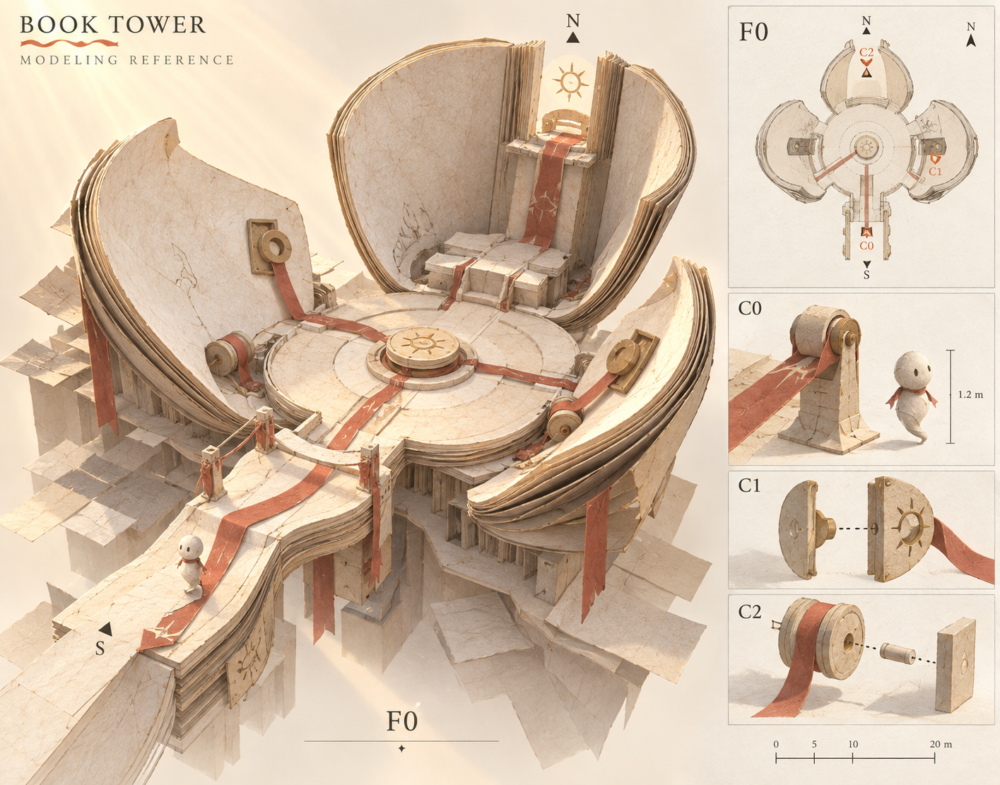01 / F0잠금쇠의 요람공간갈라진 타원형 책 표지 세 장이 꽃받침처럼 솟은 광장 · 56 × 44 × 18u해결 흐름찢어진 끈을 당겨 바람개비를 깨움 → 펄럭이는 표지 밑에서 걸쇠 조각 두 개 회수 → 서로 다른 홈에 끼움 → 중앙 누름종이 발판으로 표지를 펼침상호작용끈 3, 바람개비 2, 걸쇠 조각 2, 홈 2, 누름 발판 1, 선택 종이 꽃 4관찰과 피드백입구에서 어긋난 두 홈과 닫힌 출구를 함께 보여줌. 조각마다 홈과 같은 실루엣. 완성하면 길 전체가 펼쳐짐.소리종이 가장자리 문지름, 가벼운 딸깍, 첫 개방 시 낮은 종이 울림모델 키트거대한 걸쇠, 타원 표지 3종, 책등 경사로, 리본 풀리, 종이 꽃플레이 카메라초점 (0, 0, 0) · yaw 0° / pitch 30° · orthographic size 15C0 전경 → C1 구역 추적 → C2 조사. 상세 위치는 카메라 데이터 참조.원본 이미지 저장
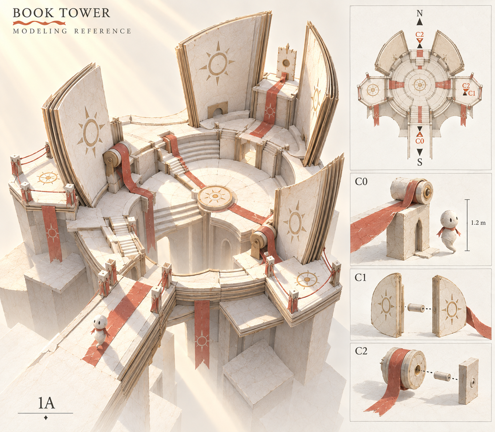02 / 1A부채잎 관측소공간부채꼴 테라스 세 층과 비어 있는 중앙 광정 · 64 × 56 × 26u해결 흐름차광 날개를 움직여 목표판 발견 → 서로 다른 높이의 두 관측대로 이동 → 아래 날개로 빛 통로 확보 → 위 접이판의 그림자를 목표 홈에 맞춤 → 확인 발판에서 그림자와 조각 결합상호작용차광 날개 3, 접이판 2, 관측 발판 2, 목표 홈 1, 승강 접지 2, 탁본 3관찰과 피드백설명 HUD 없이 목표 홈의 끊어진 외곽선과 접지점의 같은 문양을 연결. 잘못 접으면 끊어진 그림자가 그대로 남고 맞으면 출구 리본이 펴짐.소리날개마다 다른 종이 장력음, 정렬 시 두 음이 하나로 수렴모델 키트부채 바닥 3종, 접지축, 관측대, 홈이 파인 목표 종이플레이 카메라초점 (0, 3, 2) · yaw 0° / pitch 30° · orthographic size 16C0 전경 → C1 구역 추적 → C2 조사. 상세 위치는 카메라 데이터 참조.원본 이미지 저장
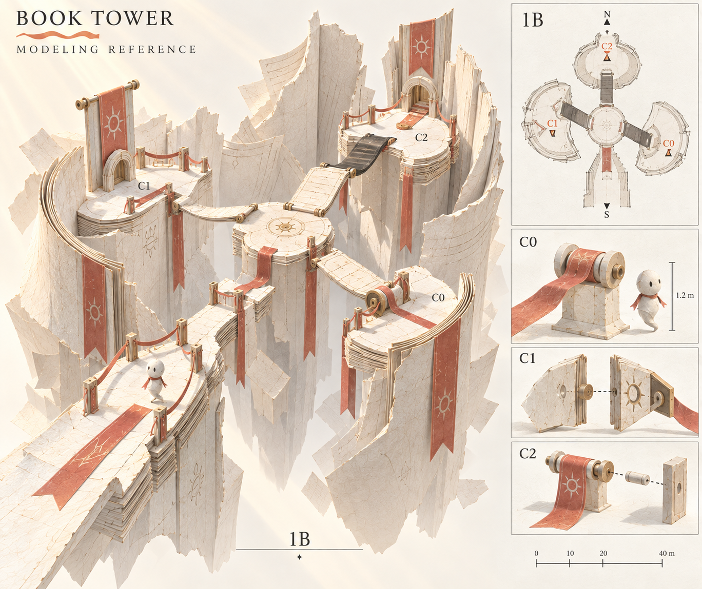03 / 1B찢어진 초승달 협곡공간초승달 모양 외곽길과 중앙의 찢어진 종이 골짜기 · 76 × 64 × 24u해결 흐름매달린 북마크를 내려 첫 징검다리 확보 → 두 조각 다리를 접어 중간 섬 연결 → 안전 섬에서 차광판 위치 바꿈 → 그림자 다리 완성 → 짧은 점프 구간 통과상호작용리본 권양기 2, 접이판 2, 차광판 1, 안전 섬 3, 선택 도장 3, 되돌림 끈 2관찰과 피드백출구까지 한 번에 건너지 않음. 중간 섬마다 다음 목표만 보임. 그림자 위 먼지가 가라앉는 연출로 밟을 수 있음을 표현.소리틈 아래 종이 바람, 발판의 탄성음, 다리 성립 시 마른 붓 소리모델 키트초승달 바닥, 찢긴 절벽, 접히는 다리, 안전 섬, 리본 난간플레이 카메라초점 (0, 2, 0) · yaw 90° / pitch 30° · orthographic size 17C0 전경 → C1 구역 추적 → C2 조사. 상세 위치는 카메라 데이터 참조.원본 이미지 저장
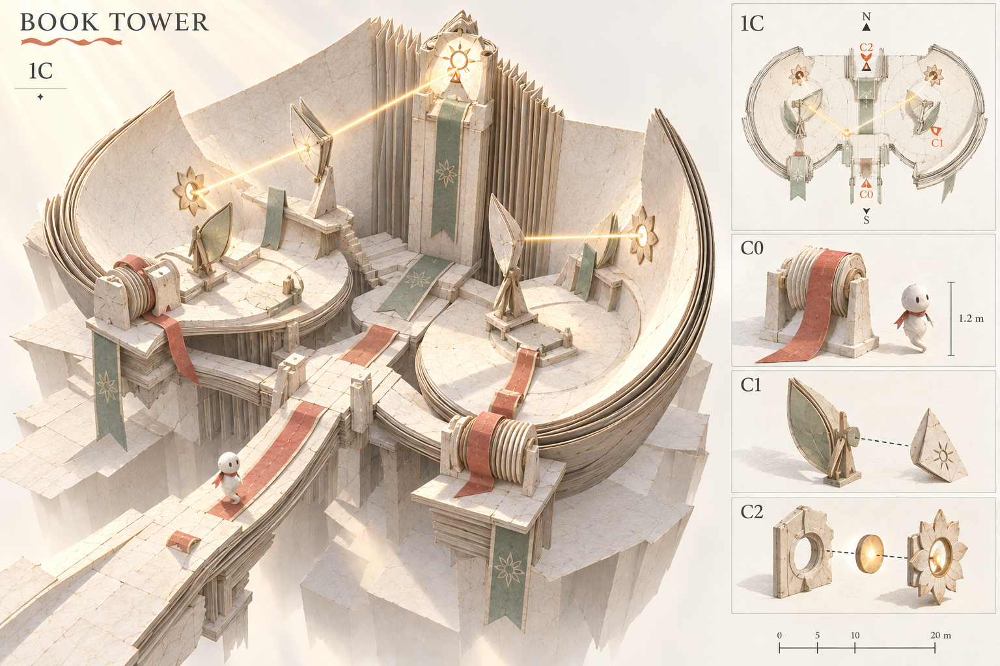04 / 1C숨 쉬는 아코디언 정원공간두 개의 조개형 종이 분지와 아코디언 능선 · 68 × 60 × 30u해결 흐름벨로즈를 눌러 반사 잎을 들어 올림 → 고정 쐐기를 가져와 상승 상태 유지 → 양쪽 반사 잎을 조절해 빛 전달 → 세 꽃받침을 차례로 깨워 출구 꽃 펼침상호작용벨로즈 2, 쐐기 2, 반사 잎 3, 꽃 수광부 3, 연습 종 2관찰과 피드백주기 기다리기만으로 풀리지 않음. 숨결 운동을 고정하고 광로를 조립. 보조 모드에서 숨결 속도 정지 가능.소리큰 종이 숨결, 수광 꽃의 목관 세 음, 반사면 가벼운 팅모델 키트아코디언 메시, 쐐기, 반사 종이, 꽃잎 승강대플레이 카메라초점 (0, 4, 0) · yaw 0° / pitch 30° · orthographic size 16C0 전경 → C1 구역 추적 → C2 조사. 상세 위치는 카메라 데이터 참조.원본 이미지 저장
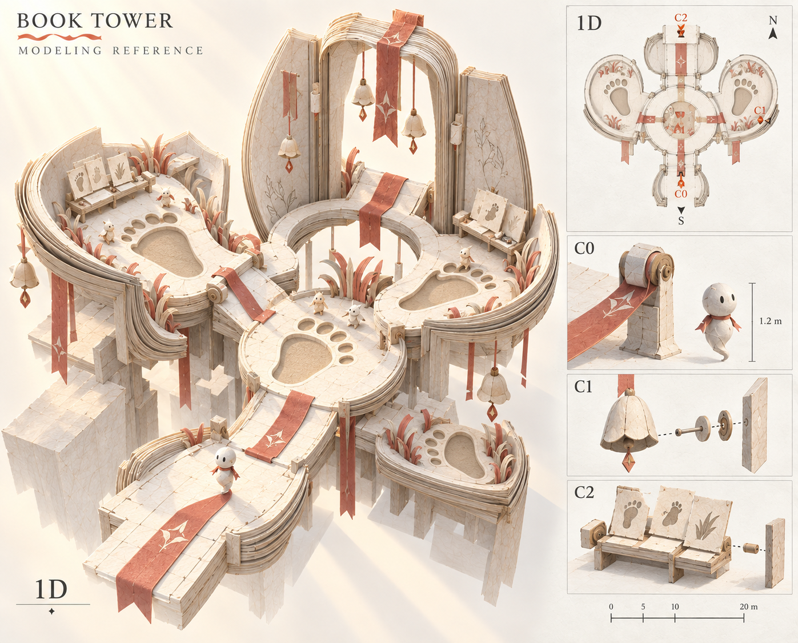05 / 1D발자국이 자라는 정원공간가지처럼 갈라진 책갈피 길과 발자국 모양의 움푹한 마당 · 72 × 58 × 20u해결 흐름종이 먼지 생물을 종소리로 유도하거나 가볍게 밟아 펼침 → 가려진 발자국 발견 → 세 기록 조각의 찢긴 섬유와 발걸음 방향 비교 → 가짜 한 장 제외 → 진짜 조각으로 도주 경로 복원상호작용종이 생물 5, 종 3, 기록 조각 3, 비교 받침 2, 발자국 덮개 4관찰과 피드백밟기는 전투가 아닌 가림막 해제. 생물은 잠시 편평해졌다 다시 접힘. 종으로 같은 결과 가능. 가짜는 색이 아니라 섬유 방향으로 구별.소리바스락 뛰는 생물, 둥근 종음, 발자국 드러날 때 연필 긋기모델 키트발자국 마당, 가지 길, 말린 종이 풀, 먼지 생물 2형, 비교 돋보기틀플레이 카메라초점 (0, 1, 0) · yaw 90° / pitch 30° · orthographic size 16C0 전경 → C1 구역 추적 → C2 조사. 상세 위치는 카메라 데이터 참조.원본 이미지 저장
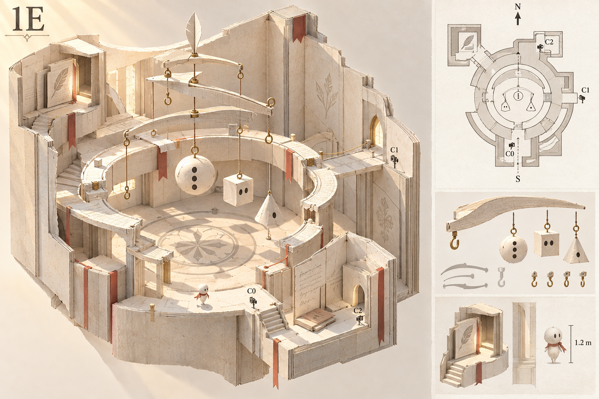06 / 1E매달린 인장의 저울공간동심원이 끊긴 고리형 발코니와 중앙 모빌 · 66 × 66 × 38u해결 흐름종이 추 세 개를 다른 가지에 배치 → 무게 균형으로 관측 발코니 높이 맞춤 → 모빌의 세 그림자를 한 인장으로 합침 → 완성 인장이 가리키는 숨은 네 번째 기록 회수상호작용종이 추 3, 매다는 홈 5, 회전 가지 3, 고정 걸쇠 2, 기록 1, 음향 잎 3관찰과 피드백세 홈만 있는 정답 맞추기가 아닌 무게와 그림자의 동시 제약. 추 모양의 점 수와 저울 기울기로 질량 읽기.소리줄 당김, 종이추 둔탁한 톡, 균형 시 조용한 공명모델 키트고리 발코니, 모빌 기둥, 무게 추, 인장 목표 바닥, 승강 책갈피플레이 카메라초점 (0, 5, 0) · yaw 0° / pitch 30° · orthographic size 18C0 전경 → C1 구역 추적 → C2 조사. 상세 위치는 카메라 데이터 참조.원본 이미지 저장
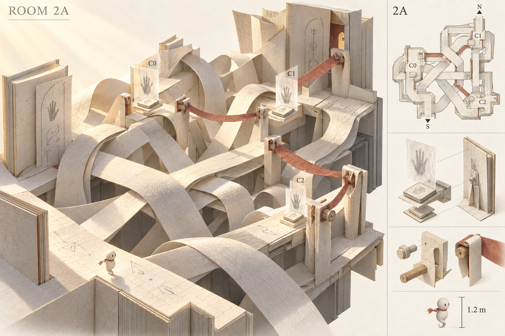07 / 2A주름을 짜는 계곡공간띠 종이가 교차하는 길쭉한 직조 계곡 · 78 × 54 × 28u해결 흐름접힌 흔적을 만져 과거 동작 재생 → 재생 손길이 누르는 발판 관찰 → 현재의 고정핀을 옮겨 과거 동작의 결과 유지 → 두 리본 길을 직조하여 건너감상호작용재생 주름 3, 고정핀 3, 발판 2, 리본 다리 4, 선택 기억 접지 3관찰과 피드백과거는 답 영상이 아니라 현재 장치와 협력하는 짧은 반복 동작. 실패해도 재생 무제한. 선행 핀 위치가 리본의 교차를 결정.소리천 대신 종이띠 스침, 재생 시 같은 바스락 패턴, 핀의 톡모델 키트직조 바닥 띠, 고정핀, 투영 흔적 손길, 교차 다리플레이 카메라초점 (0, 3, 0) · yaw 90° / pitch 30° · orthographic size 17C0 전경 → C1 구역 추적 → C2 조사. 상세 위치는 카메라 데이터 참조.원본 이미지 저장
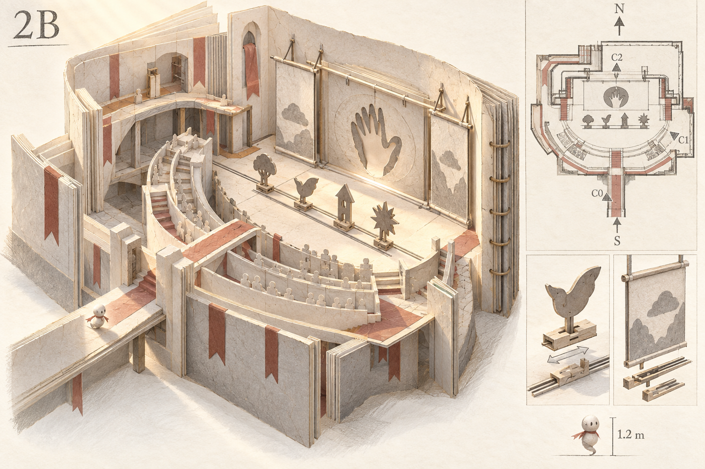08 / 2B빈자리 그림자 극장공간말굽형 관객 계단과 비대칭 무대 날개 · 70 × 62 × 32u해결 흐름앞에서 완성 그림자의 빈자리 관찰 → 옆 통로로 뒤편 소품 확인 → 좌우가 다른 홈으로 후보 소품 제외 → 가림막 두 장의 위치와 접힌 소품 각도를 조합 → 무대 뒤 문 개방상호작용소품 4, 가림막 2, 비교 투영대 2, 무대 날개 2, 선택 관객 종이 4관찰과 피드백양각 실루엣이 아니라 비어 있는 모양 추론. 뒤편 관찰로 모호한 45/135도 답을 제거. 무작위 조작보다 증거가 먼저.소리무대 종이막 굴러가는 소리, 낮은 숨결, 정답 시 한 번의 작은 박수 같은 종이 펴짐모델 키트말굽 계단, 무대 날개, 구멍 소품, 가림막 레일플레이 카메라초점 (0, 3, 0) · yaw 0° / pitch 30° · orthographic size 17C0 전경 → C1 구역 추적 → C2 조사. 상세 위치는 카메라 데이터 참조.원본 이미지 저장
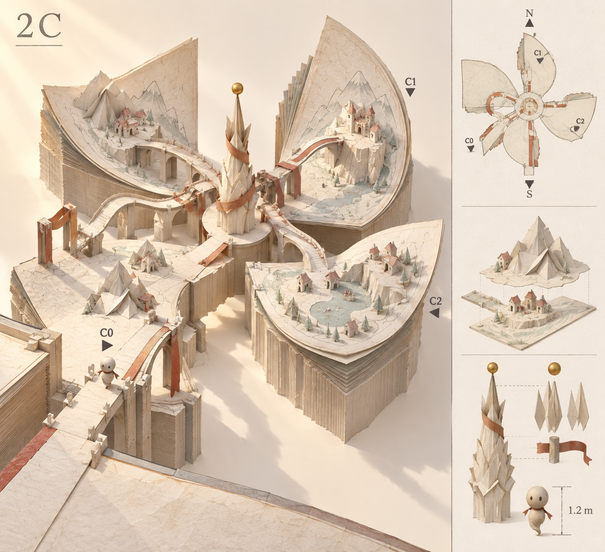09 / 2C돌아가는 지도 꽃공간고정 중심핀 주위에 네 지형 꽃잎이 접히는 지도 · 82 × 82 × 36u해결 흐름중심 핀과 기억 속 표식을 비교 → 두 꽃잎을 접어 옛 공간 관계 복원 → 현재 길이 끊기므로 다른 꽃잎으로 우회 → 안쪽 기록을 얻고 바깥 지름길 펼침상호작용지도 꽃잎 4, 고정 중심핀 1, 표식 4, 접기 잠금 2, 기록 2, 작은 팝업 집 4관찰과 피드백무조건 모든 꽃잎을 접으면 실패. 접근 경로와 기록의 좌표 관계를 동시에 유지. 접기 전 도착 위치를 점선 종이 잔상으로 표시.소리지도 접힘의 긴 저음, 핀 중심의 마찰음, 작은 집 펴지는 팝모델 키트꽃잎 지도 타일, 중앙 핀, 팝업 지형, 접기 힌지, 고정 경유대플레이 카메라초점 (0, 5, 0) · yaw 90° / pitch 30° · orthographic size 19C0 전경 → C1 구역 추적 → C2 조사. 상세 위치는 카메라 데이터 참조.원본 이미지 저장
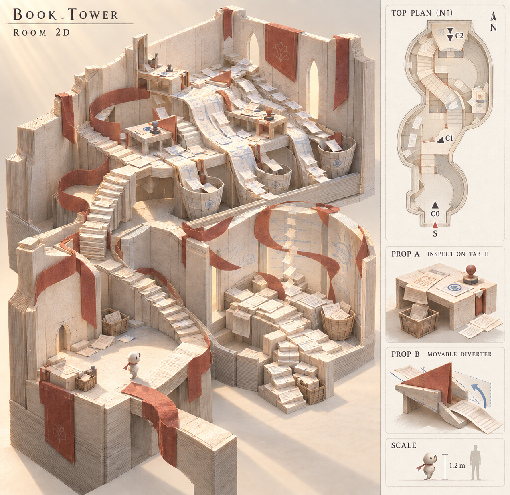10 / 2D거짓 기록의 분류 폭포공간비스듬한 문서 테라스와 S자 종이 수로 · 70 × 68 × 34u해결 흐름문서 흐름을 분기판으로 느리게 돌림 → 마른 섬유/찢긴 결/눌린 자국을 세 비교대에서 조사 → 증거에 맞는 문서만 복원통으로 분류 → 잘못 기록된 공식 문장과 실제 흔적 대조상호작용분기판 3, 기록 5, 비교대 3, 도장 2, 정지 손잡이 1, 회수 바구니 2관찰과 피드백빨리 클릭하는 게임이 아니라 관찰 분류. 정지 가능, 오분류 문서는 회수 바구니로 돌아옴. 올바른 분류가 물리적으로 길을 쌓음.소리문서 낙하의 가벼운 파닥, 도장 푹, 수로 마찰음; 물 소리 사용 안 함모델 키트S자 문서 슈트, 테라스, 증거 비교대, 도장, 회수통플레이 카메라초점 (0, 4, 0) · yaw 0° / pitch 30° · orthographic size 18C0 전경 → C1 구역 추적 → C2 조사. 상세 위치는 카메라 데이터 참조.원본 이미지 저장
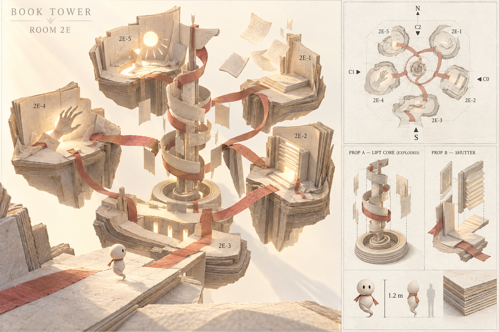11 / 2E원인의 나선 시계공간서로 다른 높이의 다섯 고리가 엮인 열린 나선 · 68 × 68 × 44u해결 흐름각 섬에서 원인과 결과 흔적 조사 → 원인 리본을 다음 결과 섬에 연결 → 연결된 두 사건 재생해 충돌 확인 → 다섯 사건의 인과 사슬 완성 → 중앙 나선 승강로 열림상호작용사건 섬 5, 연결 리본 5, 재생 종 5, 중앙 잠금 1, 선택 음판 3관찰과 피드백5! 암기 순서 대신 선행 조건의 가시적 연결. 틀린 연결은 상충하는 물체 잔상을 보여주며 조사 기록 유지. 시간 제한 없음.소리연필 시계 톡톡 대신 불규칙한 종이 타격, 완성하면 하나의 느린 리듬모델 키트나선 섬, 인과 리본, 사건 소품, 종이 승강 나선플레이 카메라초점 (0, 6, 0) · yaw 90° / pitch 30° · orthographic size 18C0 전경 → C1 구역 추적 → C2 조사. 상세 위치는 카메라 데이터 참조.원본 이미지 저장
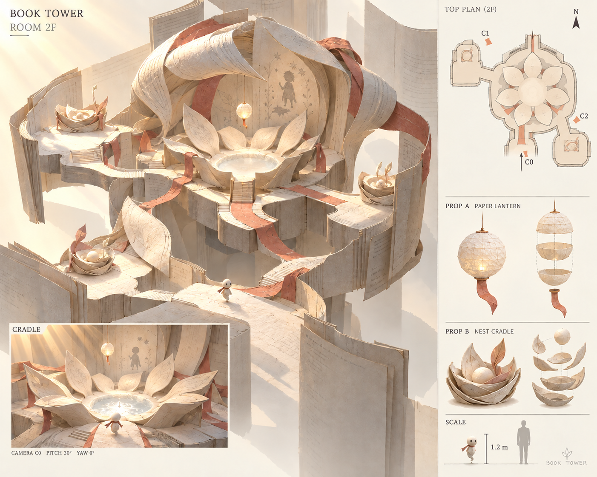12 / 2F아이의 접힌 둥지공간거대한 느슨한 종이 매듭 안의 작은 요람 분지 · 80 × 64 × 40u해결 흐름낮은 리본 길로 기억의 아이에게 접근 → 바람막이 잎 두 개 펼쳐 그림자 보호 → 작은 종이등을 안전한 둥지까지 동행 유도 → 벽에 드러나는 구출 기억 감상상호작용바람막이 2, 종이등 1, 안전 둥지 3, 리본 음판 4, 기억 주름 2관찰과 피드백앞 방과 달리 정서적 휴식. 실패 없는 세 행동, 보호된 영역은 흔들림이 잦아듦. 아이는 전투/적이 아닌 과거 그림자.소리바람이 잦아드는 변화, 작은 종이 발소리, 단음 자장가; 대사 없음모델 키트거대 매듭 껍질, 요람, 바람막이, 기억 그림자, 종이등플레이 카메라초점 (0, 2, 0) · yaw 0° / pitch 30° · orthographic size 17C0 전경 → C1 구역 추적 → C2 조사. 상세 위치는 카메라 데이터 참조.원본 이미지 저장
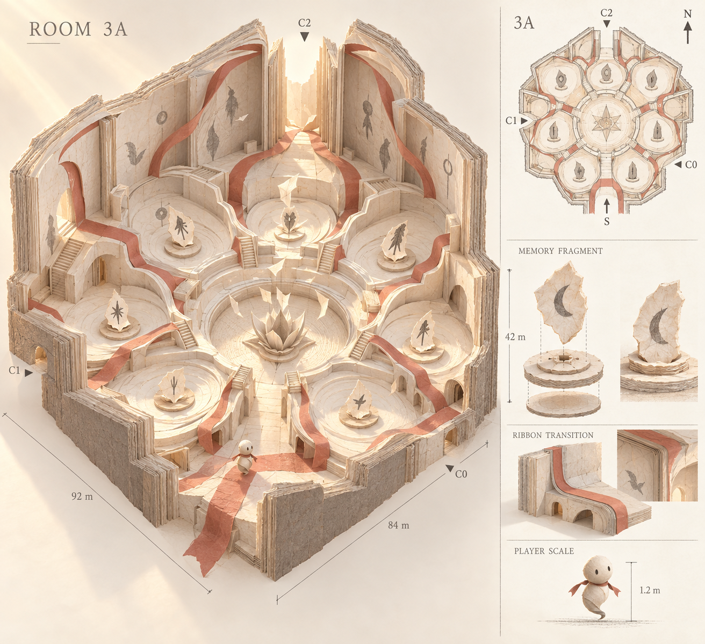13 / 3A펼쳐진 스승의 성소공간일곱 꽃잎 기록 분지와 바닥·벽·천장이 이어지는 열린 로제트 · 92 × 84 × 42u해결 흐름일곱 기록을 세 조사 구역에서 찾음 → 그을음과 빛 방향으로 시간 묶음 판별 → 중앙 띠에 사건 연결 → 구출 장면 완성 → 북쪽 3B로 진행; 재방문 시 같은 공간의 접지판과 역광으로 스승 형상 성립상호작용기록 7, 비교대 3, 기록 홈 7, 큰 접지판 1, 잔상 확인 종 2, 선택 여행자 기록 4관찰과 피드백1E 네 번째 기록이 시간 기준. 모든 표면이 스승이라는 반전 보존. 왜상용 12면은 장식과 겹치지 않게 독립 모델링.소리처음엔 넓고 빈 잔향, 기록마다 종이 호흡 한 층, 마지막에 오래된 리본 소리모델 키트로제트 지형, 기록 분지, 연속 벽천장 띠, 왜상 12면, 중앙 사건 띠플레이 카메라초점 (0, 4, 8) · yaw 0° / pitch 30° · orthographic size 21C0 전경 → C1 구역 추적 → C2 조사. 상세 위치는 카메라 데이터 참조.원본 이미지 저장
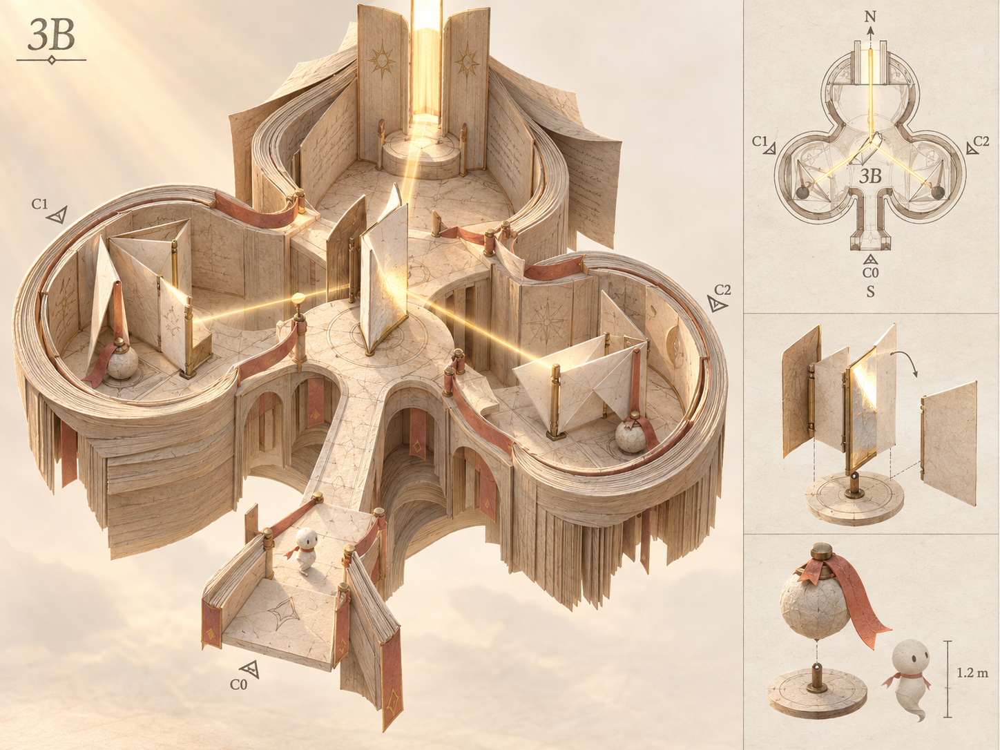14 / 3B세 갈래 빛의 매듭공간세 잎 클로버형 공간과 교차하는 중앙 광로 · 78 × 74 × 36u해결 흐름A를 조절해 열쇠 홈에 빛 전달 → B를 눌러 기억 주름 노출 → C를 펼치면 길은 열리지만 A를 가림 → C의 반사면을 뒤집어 빛을 우회 → 고정 추로 세 조건 유지상호작용A/B/C 장치 3, 반사면 2, 고정 추 2, 홈 1, 기억 주름 1, 관찰 창 3, 되돌림 끈 2관찰과 피드백독립 스위치 세 개가 아니라 상호 간섭을 해결. 빛의 각 꺾임마다 반사면 실물 배치. 3A/3C 직선 역광 통로를 별도 확보.소리조건 하나씩 열릴 때 다른 길이의 종이 공명, 간섭하면 소리가 끊김모델 키트클로버 바닥, 교차 광로 프레임, 양면 접지판, 고정 추, 북남 통광문플레이 카메라초점 (0, 4, 0) · yaw 0° / pitch 30° · orthographic size 19C0 전경 → C1 구역 추적 → C2 조사. 상세 위치는 카메라 데이터 참조.원본 이미지 저장
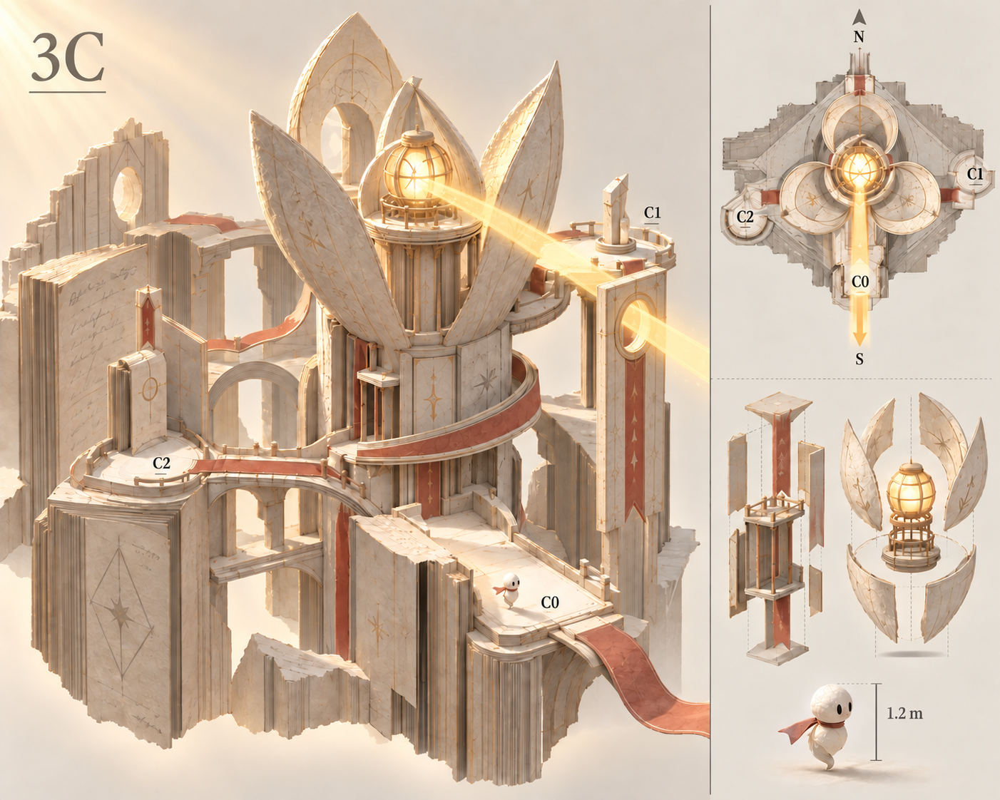15 / 3C뒤돌아보는 등대공간솟아오른 꽃봉오리형 지붕과 열린 나선 접근로 · 66 × 74 × 48u해결 흐름나선의 세 안전 구간을 지나 조리개 날개 해제 → 상단에서 세 날개를 중심 광점에 맞춤 → 등대가 앞이 아닌 지나온 방으로 향함을 발견 → 역광 켜고 펼쳐진 지름길로 3A 귀환상호작용조리개 날개 3, 잠금 3, 승강 책갈피 2, 등대 1, 귀환 끈 1, 관측창 3관찰과 피드백최종 보스 대신 회고. 점프는 짧고 중간 체크포인트. 스킵용 책갈피 승강 경로. 3A/P13·3B/P14 완료 후 최종 점등 가능.소리상승할수록 바람 얇아짐, 점등 시 낮은 한 음, 귀환 리본의 연속 바스락모델 키트꽃 조리개, 종이 등대, 나선 경사로, 귀환 리본, 통광 개구부플레이 카메라초점 (0, 7, 0) · yaw 0° / pitch 30° · orthographic size 18C0 전경 → C1 구역 추적 → C2 조사. 상세 위치는 카메라 데이터 참조.원본 이미지 저장
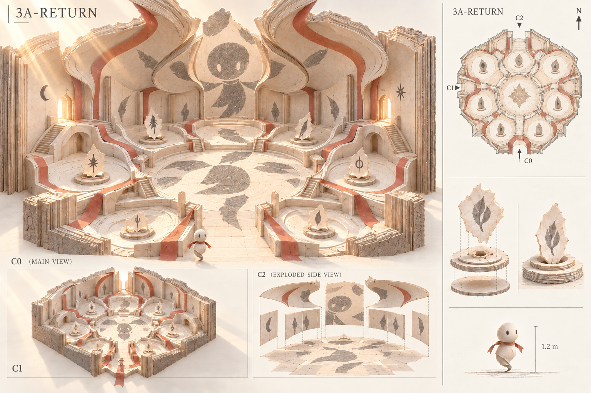16 / 3A-RETURN스승을 알아보는 자리공간3A와 동일한 로제트, 조명과 12면 접힘 상태만 변화 · 92 × 84 × 42u해결 흐름3C 역광을 따라 돌아옴 → 접지판으로 분산된 12면 회전 → 정해진 카메라 yaw에서 스승 형상 정렬 확인 → 복원하여 기록을 접거나, 펼친 기록 곁에 머무르는 선택상호작용3A 자산 재사용; 접지판 1, 선택 자리 2, 여행자 기록 4관찰과 피드백직교 카메라에서는 평행 이동만으로 상대 정렬이 바뀌지 않음. 실제 면의 접힘과 yaw가 정렬 조건. 두 결말에 선악 색상 구분 없음.소리스승과 정령의 종이 호흡이 겹침, 선택 전 음악 비움, 결말마다 같은 선율 다른 배치모델 키트3A 12면의 정렬 포즈, 복원 스승, 펼친 기록 결말 배치플레이 카메라초점 (0, 4, 8) · yaw 0° / pitch 30° · orthographic size 21C0 전경 → C1 구역 추적 → C2 조사. 상세 위치는 카메라 데이터 참조.원본 이미지 저장
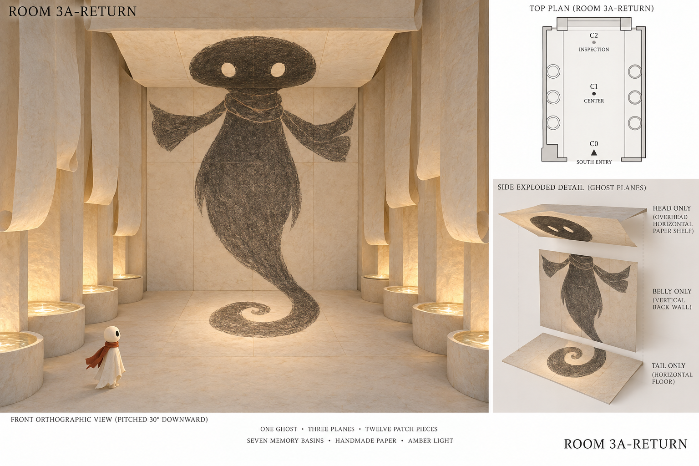3A 왜상 · 면 분할 보조 연구전체 방 구조가 아닌 국소 기믹 설명용 이미지입니다. 방의 외곽과 일곱 기록 분지는 위 3A 보드를 유지합니다. 머리/몸/꼬리를 서로 다른 면에 나누는 원리만 참고하세요. 실제 12면의 투영 정렬과 천장 면 가시성은 Unity에서 검증해야 합니다.
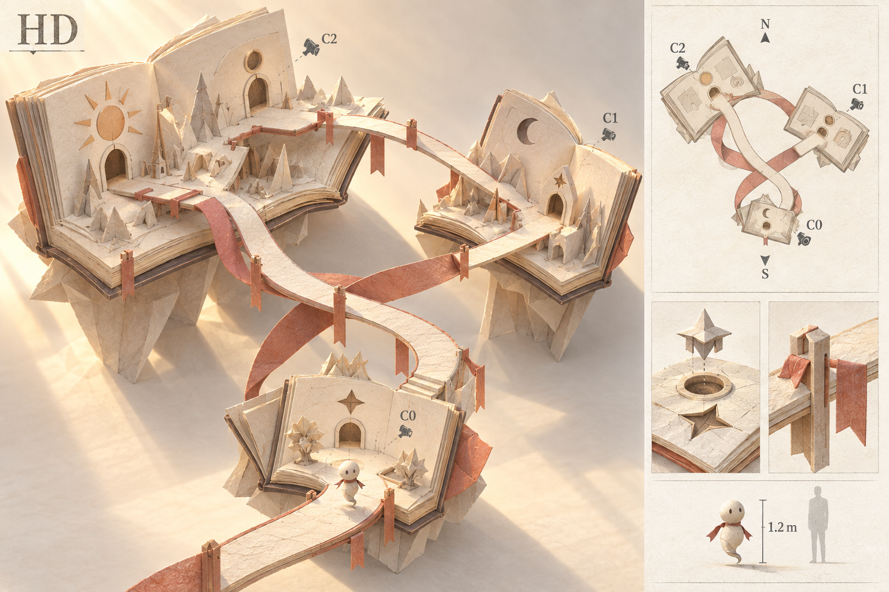17 / HD책 안의 작은 책공간큰 책·중간 책·작은 책이 서로를 품는 비대칭 8자 길 · 60 × 60 × 30u해결 흐름큰 책에서 작은 방의 모양 관찰 → 중간 책의 접지를 바꿔 아래 공간 지형 변화 → 작은 책에서 얻은 표식을 큰 홈에 대응 → 세 크기의 같은 접지 규칙으로 귀환 문 열기상호작용중첩 책 3, 접지 손잡이 3, 대응 표식 3, 작은 문 3, 선택 종이 장난감 4관찰과 피드백무한 재귀 구현이 아니라 세 개의 실제 공간을 대응시킴. 크기 변환은 문 통과 연출과 연결된 별도 공간으로 구현. 두 결말 모두 접근 가능.소리같은 종이 음색을 세 음역으로 반복, 안쪽으로 갈수록 가까운 건조한 소리모델 키트중첩 팝업 책 3세트, 8자 길, 크기 대응 문, 소형 장난감플레이 카메라초점 (0, 3, 0) · yaw 90° / pitch 30° · orthographic size 16C0 전경 → C1 구역 추적 → C2 조사. 상세 위치는 카메라 데이터 참조.원본 이미지 저장